(From: Cameraman Network)
Do you remember the VR boom ten years ago? You put on a VR headset or a similar device, turned your head, and saw a 360-degree view of the world around you. The demand to make this kind of VR content drove the rise of 360 cameras.
The VR bubble soon burst, but 360 cameras found a new way forward. More and more people saw that a 360 camera no longer had to be tied to VR. From sports to travel to daily life, 360-degree shooting not only recreates the whole scene, but also lets you frame in any direction, recompose, and move the camera freely in post. The creative freedom is far greater than normal shooting. So 360 cameras moved from a niche to the mainstream.
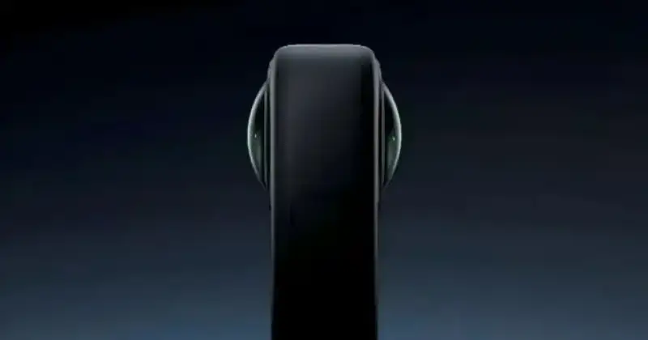
So are the 360 cameras on the market good enough now? Many users say: fun, but not good enough to live with. The complaints focus on soft detail after cropping, unbalanced light in tricky scenes, stitching misalignment in some places, and a wobble under fast motion from stabilization. All of these hurt the result. And editing 360 video is a second barrier for everyday users.
So can current technology fix these pain points? In fact, DJI already had the tech across several product lines.
A natural player in the 360 category
DJI has twelve years of deep work in handheld imaging. It moved aerial gimbal technology to the ground, used the Ronin and Osmo series to bridge professional and consumer markets, and brought high-end imaging to everyday users. But a 360 camera also needs fisheye imaging and 360 stitching. DJI mastered these more than ten years ago.
The vision obstacle sensors on drones are, in effect, a special fisheye camera module. With stereo imaging, the drone reads its surroundings in real time. But seeing through a lens is not enough. To turn the image into flight data, the system corrects distortion and stitches on the fly, in real time.
The air is far more complex than the ground. Light changes fast, the body moves at speed, and parallax is complex. This pushes stitching accuracy, light adaptation, and spatial understanding harder. Drawing on its work in surveying and 3D reconstruction, DJI developed the core asset of 360 imaging: the stitching algorithm. Because this algorithm already meets strict in-air standards, it fits a 360 camera with a built-in advantage.
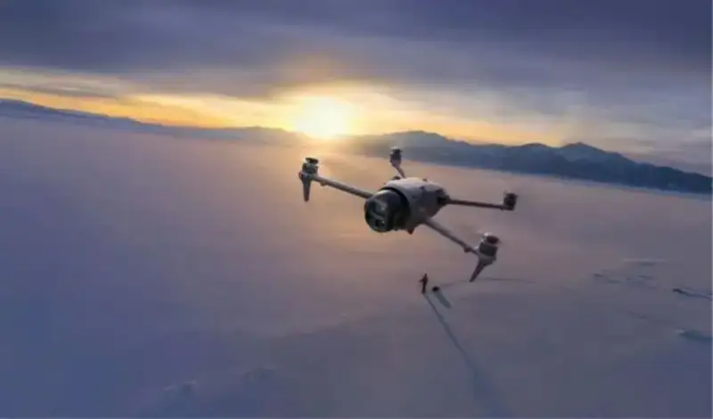
The stabilization algorithm for a 360 camera already exists in the Ronin series. Ronin won an Oscar for scientific and technical achievement and an Engineering Emmy, and its stabilization is proven in film and TV. On top of that, DJI has twelve years of imaging know-how in image quality, scene understanding, and user insight. After the Osmo Action and Osmo Pocket series, the lessons in image quality, interaction, and size carry straight over to a 360 camera.
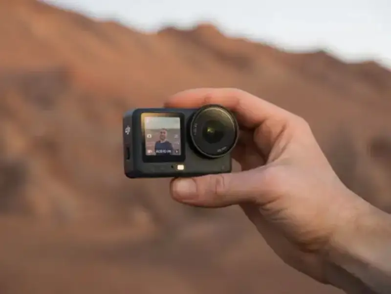
So the tech behind a DJI 360 camera flows together from three separate lines: drones, gimbals, and handheld imaging. It is a natural result of ecosystem evolution driven by consumer demand, because DJI was a natural player in 360 all along.
If DJI already had nearly all the tech for a 360 camera, could it just bolt it together and ship fast? Maybe that would monetize the tech at once, but that is not how DJI works. The first step was to ask from scratch what 360 products get wrong and what they should be. No deadline. Think it through first, then build.
A square sensor: hard, but right
After studying the 360 camera industry, DJI saw the key point fast. Earlier 360 products used phone sensors off the shelf. But these rectangular sensors have a native flaw for 360 that cannot be fixed, and the whole industry had to live with it.
On imaging, a 360 frame uses only the round center of a rectangular sensor. About 25 percent on each side is wasted. It does not help image quality, and it adds body size, power use, and heat. This structural flaw kept image-quality pain points from being fixed at the root: weak dynamic range in bright light, lost detail in shadows and highlights, choppy motion, and body heat during long recording. The traditional sensor locks the quality ceiling and the user experience at the source. Other firms see this, but fear changing one thing breaks everything, so they have no reason to act.
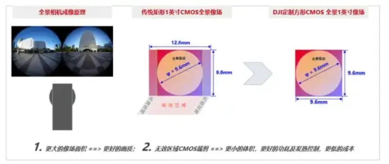
Facing this, only DJI had the will and the ability to take the hard-but-right path. Against a long cycle, high cost, and hard supply-chain work, DJI's team spent four years and built with its supply chain the industry's first square CMOS sensor made for 360 cameras. By cutting away the wasted area, the square frame fits the round 360 image circle perfectly. DJI also reallocated pixels, raising the vertical count from 3000 on the rectangle to 4000 on the square, so it records native dual-lens 8K (4K+4K) with no upscaling. It keeps the equivalent 1-inch imaging size, while the single pixel grows to 2.4 um. This raises sensor use, dynamic range, and light sensitivity.
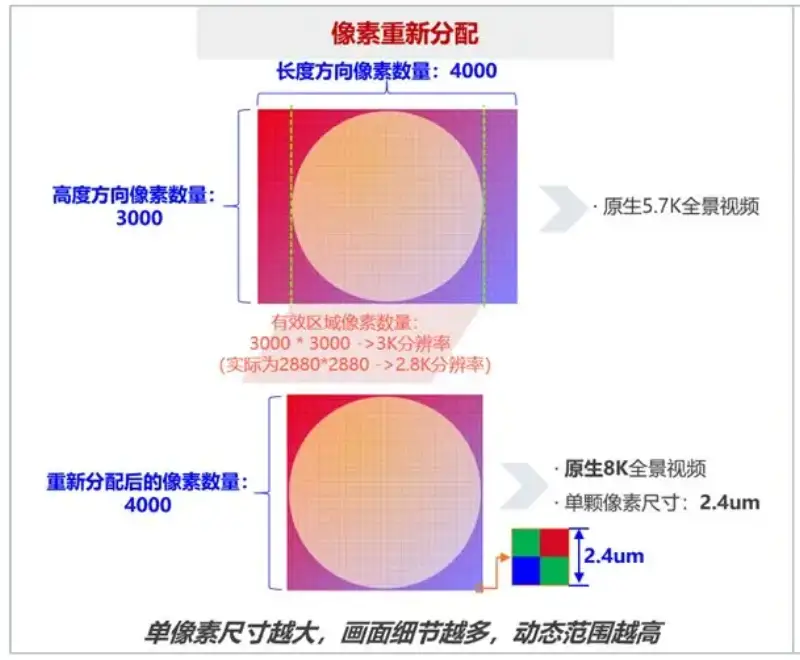
The work around this sensor is also heavy and complex. DJI matched a purpose-built fisheye lens pixel by pixel, optimized body power and heat, and rebuilt the stitching algorithm, making a full solution where software and hardware work closely together.
The square sensor balances high quality, a light body, and low power with heat. It fixes the structural conflict that troubled the industry for years. Following DJI, other firms are now adopting square sensors too. DJI, the newcomer to 360 cameras, has become the pioneer.
Three generations of tech, a leap that raises the bar
If the 360 tech for drone obstacle avoidance was generation zero, then Osmo 360 was generation one, the first to turn 360 into a product and to use the square sensor. It became a hit fast. By data from Qianji Consulting and several e-commerce sites, Osmo 360 topped the 360 category again and again, outdoing many rivals. In the 2026 618 sales window, it held about half of the 360 camera market.
The summer travel season is the busiest window of the year, and 360 cameras are tied to travel and outdoor sport, so sales show real user choice. By RUNTO data, in the 2026 summer travel season (weeks 29 to 32), the DJI Osmo 360 held about 56 percent of online sales and led the online 360 camera market.
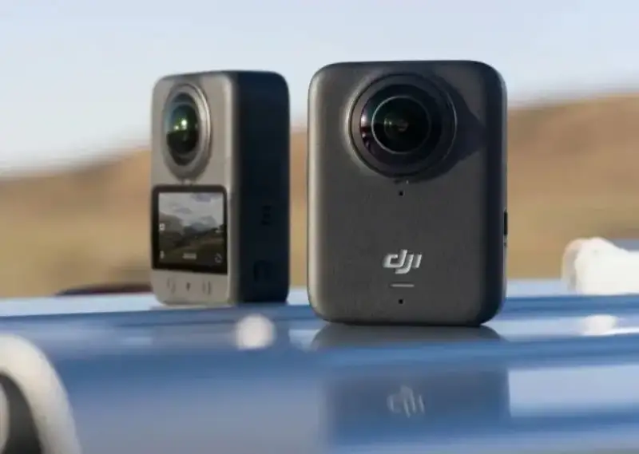
Osmo 360 took the key step from zero to one. The Avata 360 360 drone was the extreme stress test for DJI's 360 approach. Besides the high altitude and fast FPV speed, users naturally fly toward what they want to shoot, so the seam between the top and bottom cameras sits right in front of them. Any stitching flaw is hard to tolerate, so stitching precision has to be very high.
FPV drones also fly into tight spaces, so near-to-far stitching has to be perfect too. Through repeated data, training, and testing, DJI raised stitching under all shooting conditions and laid the groundwork for the next product.
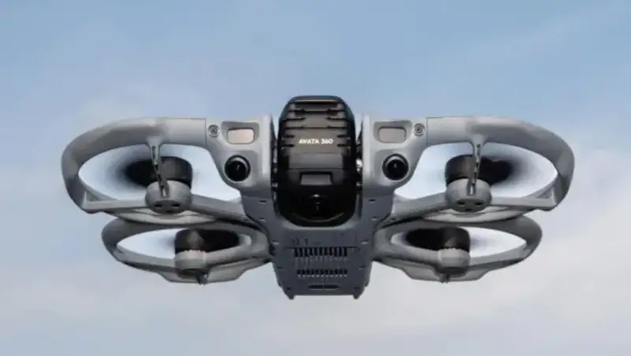
After three generations of tech, it was time for a culmination. That is the Osmo 360 II. These mature tech lines now come together on one device, fully specced for the first time.
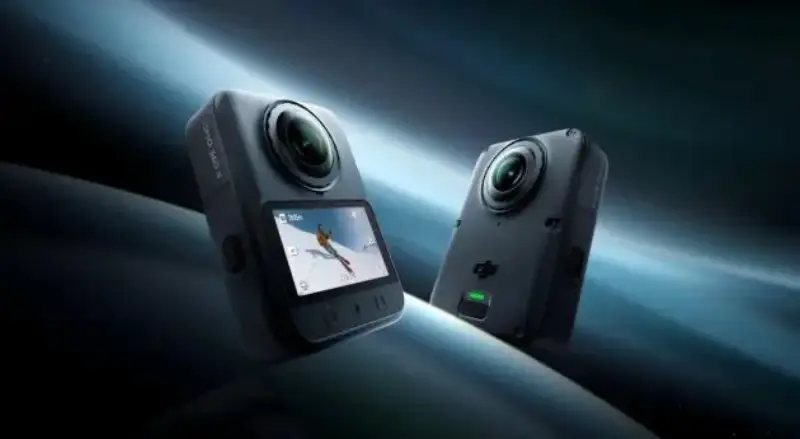
The custom square sensor, the signature of DJI's 360 line, carries over to the Osmo 360 II. The difference is a brand-new imaging platform.
The imaging platform in Osmo 360 was built to 8K/30p. To break that, the team did a lot of work. Through overclocking, better materials, and stress tests, it reached product-ready 8K/50p just before launch. Now Osmo 360 II breaks past that with a new platform. 8K/60p gives smoother motion, and 4K slow motion reaches 240 frames in one step.
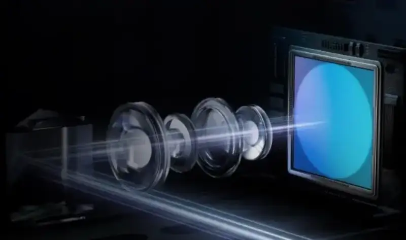
The new platform also raises sensor dynamic range to 14.5 stops, beating the old 13.5. To do this, DJI again took the hard-but-right path: independent exposure for the front and back lenses. The gain is clear. When each lens uses the right exposure, it records a wider dynamic range. The cost is that the two sides differ in brightness, which makes stitching harder. After many trials, the team built a stronger stitching algorithm and tighter hardware-software work. Osmo 360 II still stitches well even with a one-stop exposure gap between front and back.
On top of that, the more powerful compute raises clarity, bitrate, and quality in night shots, time-lapse, time freeze, and 120-megapixel HDR photos. It is fair to say Osmo 360 II pushes this square sensor to the limit and raises the bar.
How to make people want to create
For creative work, hardware guarantees quality, and software upgrades the experience. Another goal of Osmo 360 II was: easy to pick up.
With little learning, anyone can shoot 360 video. You start the camera recording and then ignore it. It records everything around you, so you never miss a moment. You do not have to sort and edit hard. The DJI Mimo app on the phone finds the highlights for you. Besides picking by frame, the app now adds audio highlights. It analyzes the clips, tags them by sound like laughter and cheers, and picks highlight cuts by audio. With one-tap film, it joins multiple clips with smooth transitions, sets the pace and music, and hands you a finished clip to watch or share. With this experience, you will want to bring it next time you go out.
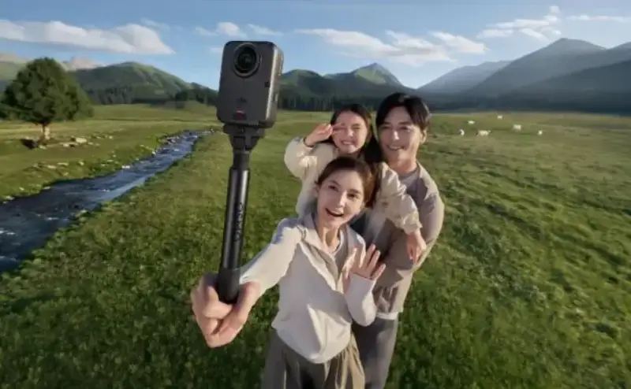
When you want the lens on you, Osmo 360 II has new ways to help. In AI subject-follow mode, after you register a face, the camera follows you first, frames in real time with no help, and keeps the subject in the center in post. You do not lose the other directions either, and you can freely choose and cut them in later.
There is also dual-lens shooting, which smartly makes a selfie view and a forward view. The phone app DJI Mimo has beauty filters, and the desktop DJI Studio tunes skin tone, texture, and effects in finer detail for vloggers. DJI Studio also has a director mode, which turns the 360 clip into several virtual camera views for multi-angle preview and editing.
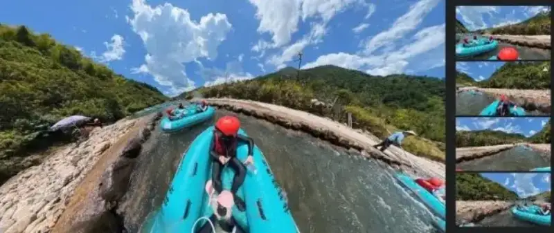
Other worries are also answered by small details on Osmo 360 II:
○ Hold it long and fear it is heavy? Osmo 360 II adds many new features but still weighs 183 grams.
○ Forget the card? The camera has 105 GB of built-in memory, so you can shoot as soon as it turns on.
○ Hate pairing the app? A built-in NFC chip links the clips with one tap and takes you straight to the editor.
○ Worried about damage? The bare body is waterproof and cold-proof, works in all weather, and the lens is scratch-resistant and replaceable.
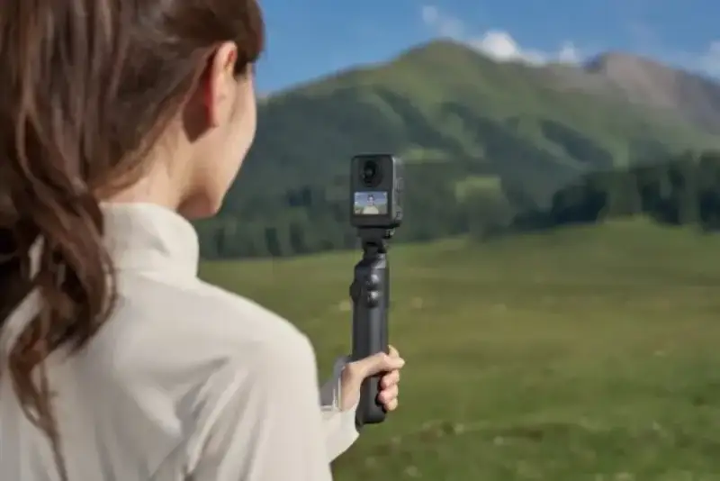
All of this removes the barriers to 360 video. DJI's logic is direct. When all the tedious work you do not want can go to the machine, the fun of creation stays, and you see the result easily, then people will want to create with a 360 camera.
While serving everyday users, DJI gives up nothing on pro features. 10-bit D-Log M color works with DaVinci plugins and fits commercial post workflows. It meets the needs of tourism promo, short reviews, outdoor documentary, and space shows for pro color, fine edit, and output. Its clips match the look of DJI drones and action cameras with no extra color work, which cuts post work. It also fits the Osmo ecosystem, so it works with many audio devices and accessories.
When pros can shoot 360 video without leaving the workflow and accessories they know, they will want to create with a 360 camera too.
The view above the ceiling
From a leap in imaging to a full upgrade of algorithms, workflow, and experience, Osmo 360 II is not just more numbers on the last model. It closes and fills the whole chain. It draws on the air side, the Ronin line, and twelve years of handheld imaging. It sits on three generations of tech, and it is the product that lands when the tech is ready.
Osmo 360 II is not the final ceiling for 360 cameras. But today, it breaks the old performance limits and leads users to a wider creative space above the ceiling.